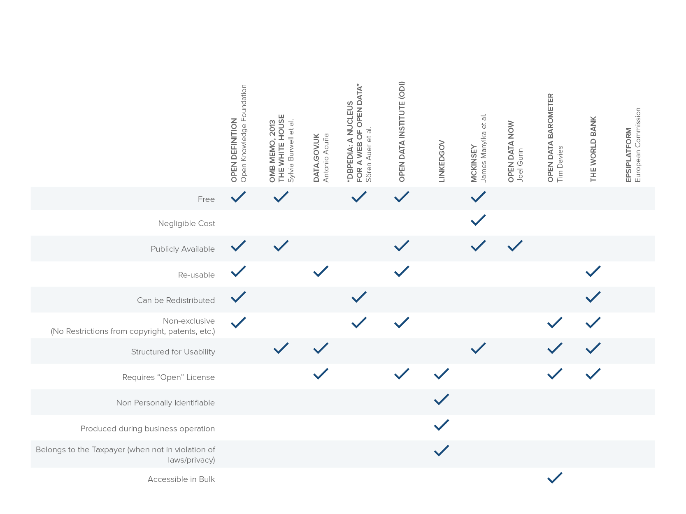

Resources
Definitions, glossaries, repositories, and other resources for further exploring the world of open data
1. Open Definition (referenced by Open Data Handbook, ODI, Open Data Census, and OECD Open Data Analytical Framework)
“Open data is data that can be freely used, reused and redistributed by anyone – subject only, at most, to the requirement to attribute and sharealike.”
2. The White House, 2013 OMB Memorandum
“Open data refers to publicly available data structured in a way that enables the data to be fully discoverable and usable by end users.”
3. Data.Gov.UK
“Open data is data that is published in an open format, is machine readable and is published under a license that allows for free reuse.”
4. Dbpedia: A nucleus for a web of open data
“Open data is the idea that certain data should be freely available to everyone to use and republish as they wish, without restrictions from copyright, patents or other mechanisms of control.”
5. Open Data Institute
“Open data is information that is available for anyone to use, for any purpose, at no cost. Open data has to have a license that says it is open data. Without a license, the data can’t be reused. These principles for open data are described in detail in the Open Definition.”
6. LinkedGov
“Open data is non-personally identifiable data produced in the course of an organization’s ordinary business, which has been released under an unrestricted license. Open public data is underpinned by the philosophy that data generated or collected by organizations in the public sector should belong to the taxpayers, wherever financially feasible and where releasing it won’t violate any laws or rights to privacy (either for citizens or government staff).”
7. McKinsey Global Institute
“Machine-readable information, particularly government data, that’s made available to others. These open datasets share the following 4 characteristics: 1. Accessibility: A wide range of users is permitted to access the data. 2. Machine readability: The data can be processed automatically. 3. Cost: Data can be accessed free or at negligible cost. 4. Rights: Limitations on the use, transformation, and distribution of data are minimal.”
8. Open Data Now
“Open Data is accessible public data we can use to launch new ventures, analyze trends, make decisions, and solve problems.”
9. Open Data Barometer
Excerpt from report indicates that researchers assessed datasets based on the “full Open Definition requirements of being machine readable, accessible in bulk, and openly licensed.”
10. The World Bank
“Data is open if it satisfies both conditions below:
- Technically open: available in a machine-readable standard format, which means it can be retrieved and meaningfully processed by a computer application
- Legally open: explicitly licensed in a way that permits commercial and non-commercial use and re-use without restrictions.”

Open Data Definitions: Matrix of Analysis
OPEN DATA CASE STUDY REPOSITORIES (alphabetically listed)
{{odr.index(resource) + 1}}. {{resource.title}}
Who
{{resource.who_html}}
What
{{resource.what_html}}
{% if resource.rationale_html %}Rationale
{{resource.rationale_html}}
{% endif %}Number of Case Studies
{{resource.number_of_case_studies}}
Countries Covered
{{resource.countries_covered}}
Contact
{{resource.contact_html}}
{% if resource.url %} {% endif %} {% if resource.case_studies_url %} {% endif %} {% if resource.database_url %} {% endif %}OPEN DATA PORTAL REPOSITORIES
Open data portals have been increasingly used by local, city and national governments to release data in open and reusable formats. These portals have encouraged the increased use of open government data and led to the development of applications, new products and services.
Launched at the 2011 Open Knowledge Foundation Conference in Berlin, DataPortals.org curates a list of over 400 open data portals from around the world, including Data.gov and New Zealand’s Open Data Case Studies. These portals specifically also provide a collection of case studies on how these portals have been used and contributed to social impact.
United States – Data.gov Impact Case Studies
In addition to providing access to numerous government data sets, the site also highlights examples of open data impact, including impact in “cost savings, efficiency, fuel for business, improved civic services, informed policy, performance planning, research and scientific discoveries, transparency and accountability, and increased public participation in the democratic dialogue.”
New Zealand – Open Data Case Studies
New Zealand’s Office of the Chief Information Office provides a list of case studies that highlight “the innovative implementation of government ICT initiatives, the successful contribution to the delivery of ICT functional leadership, and the impact of innovative re-use of open government data.” The portal showcases over 30 open data case studies from 2012 to 2015 across various open data use categories, including apps and tools; new skills; central government releases; statistics; and local government releases.
INTERMEDIARY REPOSITORIES
Several Open Data intermediaries have also developed a set of client-studies, including:
CKAN Case Studies
The CKAN data management platform helps “numerous governments, organisations and communities around the world” catalogue, search and display data.15 The site showcases 116 instances of use across Europe, Asia, Africa, South America, North America and Australasia as well five in-depth case studies from the U.K., the European Union, Helsinki and the International Aid Transparency Initiative (IATI).
DKAN Case Studies
DKAN is the Drupal-based open source data platform that includes a full suite of cataloging, publishing and visualization features that allows governments, nonprofits and universities to easily publish data to the public. The eight case studies featured on the site present an overview of the client, the project, the goal of the work and the impact of the project.
Esri Case Studies
Esri provides enterprise geographic information systems (GIS) to help its clients “make timely, informed and mission-critical decisions by leveraging the power of geography.”16 Esri provides over 80 case studies on how businesses, government agencies and nonprofits across sectors have used map-based data for decision-making and social impact.
Granicus Case Studies
Granicus manages “the world’s largest and most reliable legislative content network—containing more than 5 million government media files and public records and maintaining a 99.98% uptime track-record.” Granicus provides 30 case studies of cities across the U.S. who are “leveraging their technology to successfully run their day-to-day government information tasks including webcasting public meetings, managing and delivering legislative information, collaborating with citizens, and more.”17
IBM Smarter Cities Case Studies
The IBM Smarter Cities projects “help government leaders manage complex city environments, incidents and emergencies with a city solution that delivers operational insights.”18 Tools from the IBM Intelligent Operations Center (US) offer integrated data visualization, near real-time collaboration and deep analytics to help city agencies enhance the ongoing efficiency of city operations, plan for growth and coordinate and manage response efforts. The aim of the initiative is to help power more collaborative working relationships across businesses, industries and state and town lines – and draw in an ever more active and engaged citizenry.19 There are five in-depth interactive case studies from cities around the world available with details on what IBM did and how they did it.
Microsoft Case Studies
Microsoft open government solutions “allows governments to reach and interact with citizens when and where they need through secure and effective data sharing and open access across mixed technology environments.” The solutions help to “provide effective information between various government agencies and with constituents while not sacrificing security and privacy.”20 The diverse case studies set out the business needs of the organization (including governments, nonprofit organization and companies), the solution developed by Microsoft and the benefits of the initiative.
Socrata Case Studies
The Socrata case studies provide descriptions of Socrata-led initiatives with governments at the municipal (e.g., Boston), state (e.g., Hawaii) and federal levels (e.g., Spain). Each of the 29 case studies provides a description of the initiative, why it was developed and the main highlights of the project.
Selected GovLab Open Data Impact Publications
- Open Data: A Twenty-First-Century Asset for Small and Medium-Sized Enterprises
- The Open Data Era in Health and Social Care
- Information for Impact: Liberating Nonprofit Sector Data
- The GovLab Index: Open Data
- Selected Readings on Open Data
- Selected Readings on Smart Disclosure
GovLab Open Data Projects
- Open Data 500 Global Network
- Data Collaboratives Project Hub
- Legisletters
- NHS - Open Data
- OrgPedia - Crowdsourcing and Impact Modeling
- Data Driven Criminal Justice
- Docker for Data
- Open Grantmaking
Omidyar Network Open Data Resources
- Open Data: Six Stories About Impact in the UK
- Open for Business: How Open Data Can Help Achieve the G20
- The Business Case for Open Data
Other Resources
Reference
6 Hogge, Becky. “Open Data: Six Stories About Impact in the UK.” Omidyar Network. November 2015. https://www.omidyar. com/sites/default/ les/ le_archive/insights/Open%20Data_Six%20Stories%20About%20Impact%20in%20the%20UK/ OpenData_CaseStudies_Report_complete_DIGITAL_102715.pdf